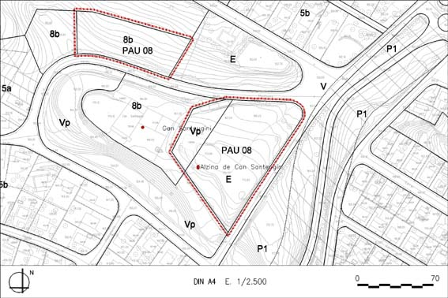

PAU 08 “Can Santeugini” (Polígon d’actuació urbanística PAU – 08)

Objectiu: Reubicació d’uns terrenys destinats a equipament, i preservació de l’entorn de la masia de Can Santeugini.
Règim del sòl: Sòl Urbà No Consolidat
| Superfície del polígon: Ordenació (Plànol vinculant) Sistemes urbanístics de cessió: Equipaments (E) Zones edificables: (Gàlibs indicatius) Dotacions i serveis (clau 8b) Verd privat (Vp) |
12.084 m2s 6.896 m2s 3.709 m2s 1.479 m2s |
C.E.B.: (St) Sostre total |
0,154 m2st/m2s 1.855 m2st |